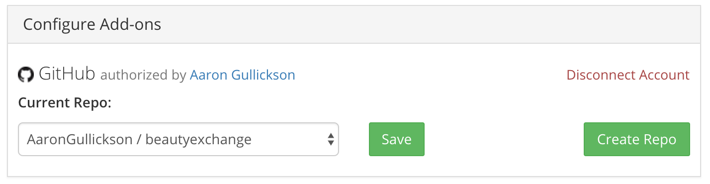

Posting the underlying code and data for the statistical analysis in an academic paper is becoming a more common practice, although hardly universal in many disciplines. However, even when code and data are posted, it is usually made available upon publication of the paper, leaving out those who would benefit the most from access: the anonymous peer reviewers of the manuscript. Shouldn’t the people who will put your work to the most scrutiny be the ones who have full access to see exactly what you did?
It is possible in some cases, of course, to just zip up your data code files and dump them in with your manuscript submission to a journal as “supplementary material.” However, the availability of this option may vary by journal and reviewers who are used to just downloading the manuscript PDF may miss your supplementary material altogether.
In this post, I want to demonstrate a more elegant solution using the project framework of the Open Science Foundation combined with GitHub. I have used this procedure for my most recent manuscript submissions with great success. If you are not a git or GitHub user, you can ignore the final step I discuss here, but really you should become a git user.
Step 1: Prepare your files
How to properly organize your data and code files for the easy accessibility of others is beyond the scope of this post, but here I want to highlight two basic minimum requirements that should be met before you make files available to reviewers:
- Anonymize. You are submitting these files under anonymous peer review. Therefore, you should ensure that nothing in the files can identify you. Remove all names or anything else that could identify you.
- Provide a Guide. You need to provide some basic information that will allow readers to understand what is contained in your files. A simple README file will usually suffice. This README should explain what each of the scripts does, the order in which those scripts should be run to reproduce the analysis, and distinguish which data is from the original source and which has been constructed by the analyst. Ask yourself a simple question: Would other people be able to figure out how to replicate the analysis in these files without having me there to explain it to them? If the answer is no, then you need more documentation.
Step 2: Set up an OSF Project with View-only Links
The Open Science Foundation provides an excellent tool for organizing research projects and disseminating information about them. You can associate manuscripts, data, and code with projects, track changes to the project, and even include a wiki. You can also link your OSF project to manuscripts on SocArxIV. Here is an example of a project for one of my own recently published papers. If you don’t already have an account, you should create one.
You can create a view-only link for any OSF project. A view-only link will open up the project page, but with all name references removed. Here is an example of that same example project of mine but provided through a view-only link. Notice that contributors are listed as “Anonymous” and the person responsible for all changes to the project is listed as “user.” UPDATE: As noted by Phil Cohen on Twitter, this link provides “courtesy” anonymity, not secure anonymity. A sophisticated viewer can still access the named project page by removing the “?view_only” part of the html address.
To set up a view-only link for a project, follow these steps:
- Go to the project Settings tab.
- In the View-only Links section, click the green “+Add” button. This will bring up a dialog with more options. You must click the button to “Anonymize contributor list for this link”. If your project has multiple components, you can also decide which components to add here.
- Now you should see a description of your View-only Link with the option to copy the full link. Here is what mine looks like:

To make this link available to reviewers, I include the link directly in a footnote on the first page of my manuscript with instructions that reviewers can find all code and data as well as supplementary analyses at that location.
But how do you get code and data into the project? You can just drag and drop your code and data files into the files section on your OSF project. However, if you use git (subliminal message: you should use git) for version control, there is a better way.
Step 3: Link OSF to your GitHub data
Github (or other git platforms like Gitlab) provides an excellent tool to disseminate data and code, include documentation, and to update that code and data with a proper log of all changes. Here is an example of a GitHub repository with code for the reproduction of an analysis.
Thankfully, OSF provides the ability to link to your GitHub repository. Just go to the “Add-ons” tab of your OSF project and enable the GitHub (or GitLab) settings. After authenticating with GitHub, you will then have the ability to select a repository to be associated with the project. Here is an example of what this looks like in my project:

Once you have selected a repository, that repository will show up in the files section of your OSF project. If you make any changes to that data and code, those changes will automatically be updated on OSF once you push them to your GitHub repository. You no longer have to worry about manually moving over new files if you make a change.
Importantly, you can link private repositories here as well. So if you want to keep your code and data private until publication, you can set your GitHub repo to private but still make it available to reviewers through OSF.
If you are git-averse, then its worth noting that you can also link to Dropbox and OneDrive if you want to keep your data and code there instead.